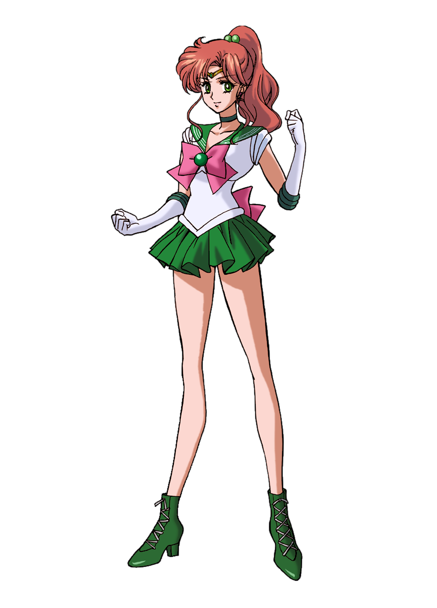
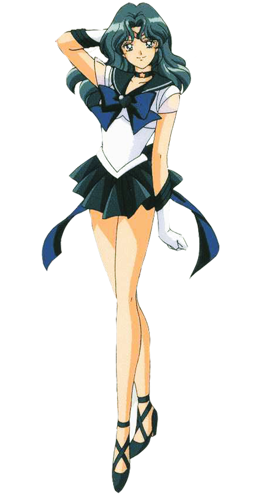

|
Sailor Moon |
Sailor Moon is Usagi Tsukino's Senshi identity. She is the de facto leader
of the
Solar System Sailor Senshi. This is the first animated depiction of the original
manga character created by Naoko Takeuchi.
| Biographical |
| Alignment: |
Moon Kingdom, Crystal Tokyo |
| Resides in: |
Azabu-Juuban, Minato-ku, Tokyo |
| Occupation: |
Leader of the Sailor Senshi |
| Aliases: |
Usagi Tsukino
Princess Serenity
Neo-Queen Serenity |
| Titles: |
Sailor Soldier of Love and Justice
Scout of Sanctity |
| Forms: |
Sailor Moon (Seasons 1-3)
Princess Serenity
Neo Queen Serenity
Super Sailor Moon (Season 3-4)
Eternal Sailor Moon (Season 5) |
| Associates: |
Luna and Artemis
All nine Sailor Soldiers of the Moon Kingdom
King Endymion (occasionally)
Sailor Starlights' (temporarily)
Chibi Chibi (temporarily)
Princess Kakyu (temporarily) |
| Personal |
| Birthdate: |
June 30 |
| Age: |
14-16 |
| Species: |
Human |
| Relatives: |
Queen Serenity (deceased mother) |
| Likes: |
Mamoru
Chibiusa
Her dearest friends and fellow Sailor Senshi
Eating
Video Games
napping |
| Dislikes: |
Homework,Fighting Monsters,Carrots |
|
 |
Sailor Mercury |
Sailor Mercury is the first member of the Sailor Team to be discovered by
Usagi Tsukino, third to be awakened by the Moon Cats, and serves as the "brains"
of the group. Her powers are associated with phases of water and ice, and she can
use her mini-computer to quickly analyze a foe in battle. Most of her powers are
strategic rather than offensive, and she possesses various pieces of computerized
equipment to help her study the enemy. She also has an IQ of 300.
| Biographical |
| Alignment: |
Moon Kingdom, Crystal Tokyo |
| Resides in: |
Azabu-Juuban, Minato-ku, Tokyo |
| Occupation: |
Sailor Senshi |
| Aliases: |
Ami Mizuno |
| Titles: |
"Soldier of Water and Intelligence"
"Soldier of Wisdom"
"Soldier of Justice and Wisdom"
"Soldier of Love and Exams" and
"Soldier of Knowledge" under the guardianship of the "Planet of Water" |
| Forms: |
Princess Mercury
Sailor Mercury
Super Sailor Mercury
Eternal Sailor Mercury |
| Associates: |
Solar System Sailor Senshi |
| Personal |
| Birthdate: |
September 10th (Virgo) |
| Age: |
14-16; 22 (30th Century) |
| Species: |
Human |
| Height: |
158 cm |
|
 |
Sailor Mars |
Sailor Mars is one of the five original Inner Sailor Senshi of the Solar
System, and was the third Sailor Senshi introduced in the anime. Her civilian
identity is Rei Hino. Her attacks are based around fire, psychic powers, and
spiritual powers. This is the first animated depiction of the original manga
character.
| Biographical |
| Alignment: |
Moon Kingdom, Crystal Tokyo |
| Resides in: |
Hikawa Shrine, Azabu-Juuban, Minato-ku, Tokyo |
| Occupation: |
Sailor Senshi |
| Aliases: |
Rei Hino |
| Forms: |
Sailor Mars
Super Sailor Mars |
| Associates: |
Solar System Sailor Senshi |
| Personal |
| Birthdate: |
April 17th |
| Age: |
14-16 |
| Species: |
Human |
|
|  |
Sailor Jupiter |
Sailor Jupiter is one of the five original Inner Sailor Senshi of
the Solar System, and was the fifth Sailor Senshi to be introduced in
the anime. Her civilian identity is Makoto Kino. Her attacks are
based around electricity and nature, as well as physical strength.
This is the first animated depiction of the original manga character.
- "Agent of Love and Courage, the pretty sailor
suited soldier
Sailor Jupiter! I'll make you feel so much regret, it'll leave you numb!"
- — Sailor Jupiter's stock introduction
| Biographical |
| Alignment: |
Moon Kingdom, Crystal Tokyo |
| Resides in: |
Azabu-Juuban, Minato-ku, Tokyo |
| Occupation: |
Sailor Senshi of the Moon Kingdom (past)
Inner Sailor Senshi of Crystal Tokyo (future self) |
| Aliases: |
Makoto Kino |
| Titles: |
Soldier of Protection
Scout of Lightning
Soldier of Bravery and Lightning |
| Forms: |
Sailor Jupiter
Super Sailor Jupiter |
| Associates: |
Solar System Sailor Senshi
Outer Sailor Senshi (occasionally) |
| Personal |
| Birthdate: |
December 5 (Sagittarius) |
| Age: |
14-16 |
| Species: |
Human |
| Likes: |
Fighting
Martial arts
Kung fu and karate |
| Dislikes: |
Evil Beings |
|
 |
Sailor Venus |
Sailor Venus is one of the Solar System Sailor Senshi, as well as one of
Princess Serenity's guardians, and the de jure leader of the Inner Senshi.
- "Agent of Love and Beauty, the pretty sailor
suited soldier Sailor Venus! In the name of Love, I will punish you! "
- — Sailor Venus's stock introduction
| Biographical |
| Alignment: |
Moon Kingdom, Crystal Tokyo |
| Resides in: |
Shiba Koen, Minato-ku, Tokyo |
| Occupation: |
Sailor Senshi |
| Aliases: |
Minako Aino, Sailor V |
| Forms: |
Sailor Venus, Super Sailor Venus |
| Associates: |
Artemis, Solar System Sailor Senshi |
| Personal |
| Birthdate: |
October 22 (Libra) |
| Age: |
14-16; |
| Species: |
Human |
|
 |
Sailor Pluto |
Sailor Pluto is one of the four Outer Senshi of the Solar System, as well as
the guardian of the Space-Time Door, and was the sixth Senshi to be introduced in
the anime. Her civilian identity is Setsuna Meiou. Her attacks are based around
time, the underworld, space, and darkness; granted by her orb. This is the first
animated depiction of the original manga character.
| Biographical |
| Alignment: |
Moon Kingdom, Crystal Tokyo |
| Resides in: |
The Space-Time Door Tokyo, Japan |
| Occupation: |
Sailor Senshi |
| Aliases: |
Setsuna Meiou |
| Titles: |
Sailor Soldier of Time
Soldier of Revolution |
| Forms: |
Sailor Pluto (Seasons 2-3)
Super Sailor Pluto (Sailor Stars) |
| Associates: |
Solar System Sailor Senshi |
| Personal |
| Age: |
18-20 |
| Species: |
Human |
|
 |
Sailor Uranus |
Sailor Uranus is one of the four Outer Solar System Senshi, and the keeper of
the Space Sword. She is rarely ever seen without her lover, Sailor Neptune.
As a Sailor Senshi, Uranus' tactics (along with Neptune's) can be controversial
and morally ambiguous, which puts her at odds with Sailor Moon and the other
Inner Senshi - particularly since they can frequently involve sacrificing lives.
This includes willing to let the Death Buster's victims die, if their Heart
Crystals were the ones they were searching for, wanting to kill Hotaru, because
she had the Messiah of Silence within her and betraying Super Sailor Saturn and
Super Sailor Pluto in an attempt to join with Galaxia and then double-crossed
her.
| Biographical |
| Alignment: |
Moon Kingdom/Silver Millennium Crystal Tokyo |
| Resides in: |
Tokyo, Japan |
| Occupation: |
Sailor Senshi of silver Millennlum |
| Aliases: |
Haruka Tenou |
| Titles: |
Sailor Soldier of air/Wind"
"Soldier of Flight"
"Keeper of the Space Sword"
"Scout of the Skies"
"Soldier of the Upper World"
"Scout of the Heavens" |
| Forms: |
Sailor Uranus (Seasons 2-3)
Super Sailor Uranus (Sailor Stars) |
| Associates: |
Solar System Sailor Senshi |
| Personal |
| Birthday: |
January 27th |
| Age: |
16-17 |
| Species: |
Human |
|
|  |
Sailor Neptune |
Sailor Neptune is one of the four Outer Solar System Senshi, and the keeper
of the mystical talisman called the Deep Aqua Mirror. She is rarely ever seen
without her girlfriend/lover Sailor Uranus.
| Biographical |
| Alignment: |
Moon Kingdom, Crystal Tokyo |
| Resides in: |
Silver Millennium (originally)
Tokyo, Japan (after being reborn) |
| Occupation: |
Sailor Senshi of the Outer Solar System |
| Aliases: |
Michiru Kaiou |
| Titles: |
Sailor Scout of the Sea
Soldier of Embrace
Sailor Soldier of Affinity |
| Forms: |
Sailor Neptune (Season 3)
Super Sailor Neptune (Season 5) |
| Associates: |
Sailor Uranus
Sailor Pluto
Sailor Saturn
Inner Sailor Senshi (occasionally) |
| Personal |
| Birthday: |
March 6 (Pisces) |
| Age: |
16-17 |
| Species: |
Human |
| Relatives: |
Amara Tenoh (cousin; Cloverway English dub) |
|
 |
Sailor Saturn |
Sailor Saturn is the Sailor Guardian identity and other self of Hotaru Tomoe.
She possesses powers associated with Ruin and Silence originally and was later
changed to Death and Destruction. She was able to be reborn and reincarnated
within the mind and body of a newborn Hotaru Tomoe through Super Sailor Moon's
power. She appears before her own reincarnation, the four-year-old Hotaru, and
returns the memories of her previous life; thus awakening her as a Sailor
Guardian.
| Biographical |
| Alignment: |
Moon Kingdom, Crystal Tokyo |
| Resides in: |
Tokyo, Japan |
| Occupation: |
Sailor Senshi of the Outer Solar System |
| Aliases: |
Hotaru Tomoe |
| Titles: |
Scout of Silence
Guardian of Doom
Soldier of Death and Rebirth
Warrior of Ruin
Messiah of Silence (allegedly) |
| Forms: |
Sailor Saturn
Super Sailor Saturn |
| Associates: |
Solar System Sailor Senshi |
| Personal |
| Age: |
12 (Infinity arc)
15-16 (actual)
Newborn (after rebirth)
4-5 (after reawakening) |
| Species: |
Evolved human
Human (bonded with Hotaru) |
| Relatives: |
Souichi Tomoe (father)
Keiko (deceased mother) |
| Likes: |
Sailor Chibi Moon |
|
 |
Sailor Chibi Moon |
Sailor Chibi Moon has bright bubblegum pink hair with three feathers on each
side of her head. She wears a white shirt with a red bow, a pink skirt, white
gloves and long bright pink boots.
| Biographical |
| Alignment: |
Moon Kingdom, Crystal Tokyo |
| Resides in: |
Crystal Tokyo, Azabu-Juuban, Minato-ku, Tokyo |
| Occupation: |
Inner and Outer Sailor Senshi of the Moon Kingdom |
| Aliases: |
Chibiusa Tsukino,Small Lady |
| Titles: |
Sailor Senshi of Friendship |
| Forms: |
Black Lady (Season 2)
Princess Lady Serenity
Sailor Chibi Moon (Season 3)
Super Sailor Chibi Moon (Seasons 4-5) |
| Associates: |
Solar System Sailor Senshi, Diana, Pegasus/Helios, Perle, |
| Personal |
| Birthday: |
June 30th |
| Age: |
6-8
15-16 (actual)
Newborn (after rebirth)
4-5 (after reawakening) |
| Species: |
human |
| Relatives: |
King Endymion (father)
Neo Queen Serenity (mother)
Queen Serenity (deceased grandmother) |
|